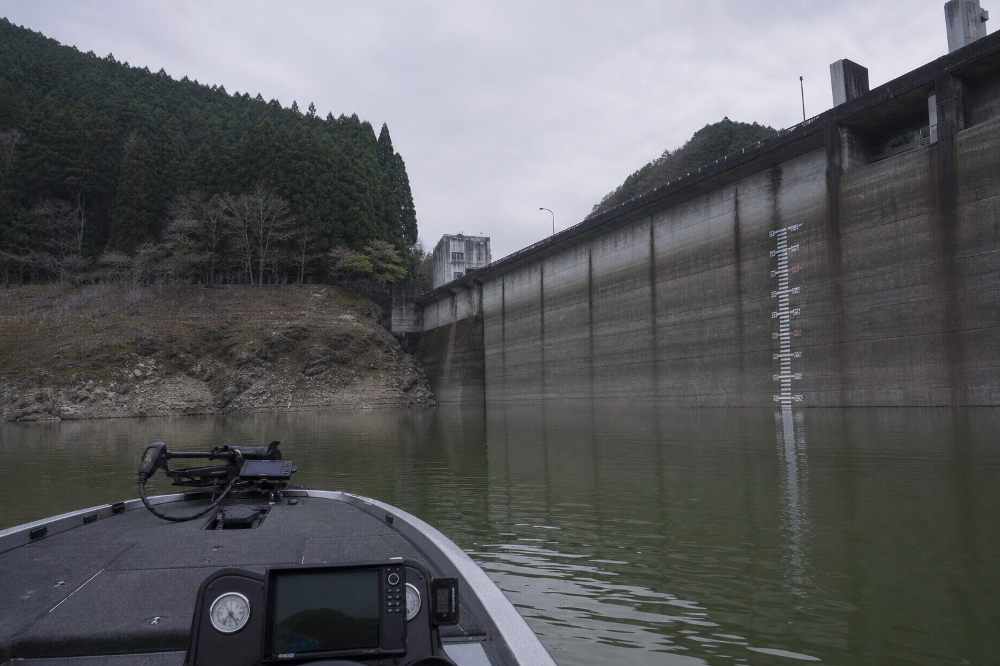
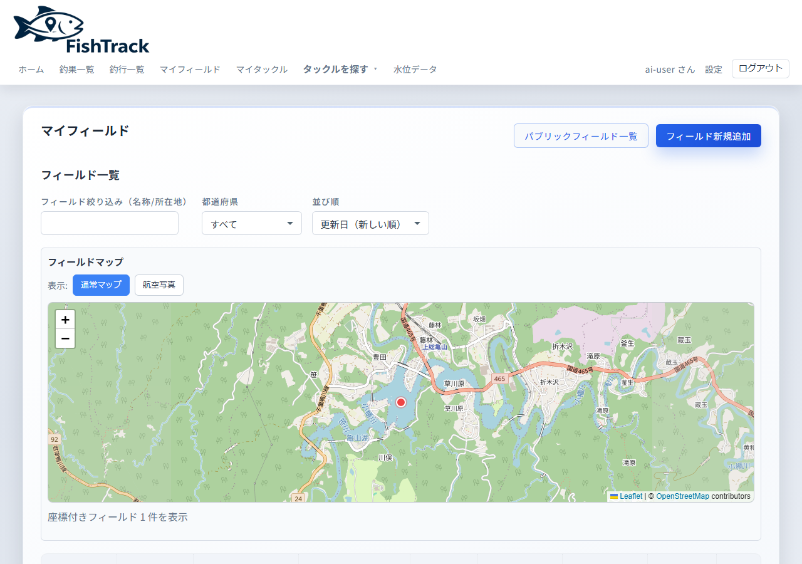

現場、その日の釣果を残す
釣果と写真、時間と場所。スマホからでも入力しやすく、その日の記録を逃さず残せます。使うには登録が必要です。


行き先の水位と釣行記録を照らし合わせ、行く前の判断に使えます。


釣果と写真、時間と場所。スマホからでも入力しやすく、その日の記録を逃さず残せます。使うには登録が必要です。
その日の釣行を1件にまとめ、フィールドや日付で見返します。


写真・サイズ・フィールド・時刻を1件ずつ残す。写真から日時や場所を入れることもできる。

その日の釣行として記録をまとめ、フィールドや日付で見返す。
よく行くフィールドに自分のポイントを残し、地図で確認できる。

持っているロッド・リール・ルアーを残し、釣果と結び付けられる。

型番の一覧から探して、持っているタックルとして残せる。

よく行くフィールドの水位を見て、行く前の判断に使う。
釣果や釣行に天候・水温を残し、次の判断に使う。
最近の釣果・釣行と、サイズの BEST をホームで見返せる。

無料で新規登録。無料枠は広告表示あり。
確認が完了すると、記録を残せるようになります。
写真を先に追加すると、日時や場所の入力がしやすいです。